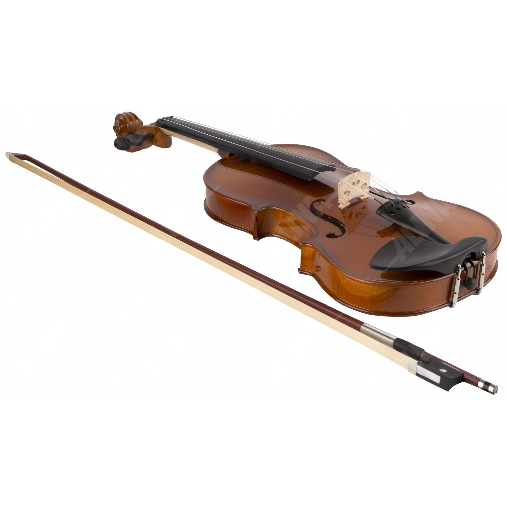
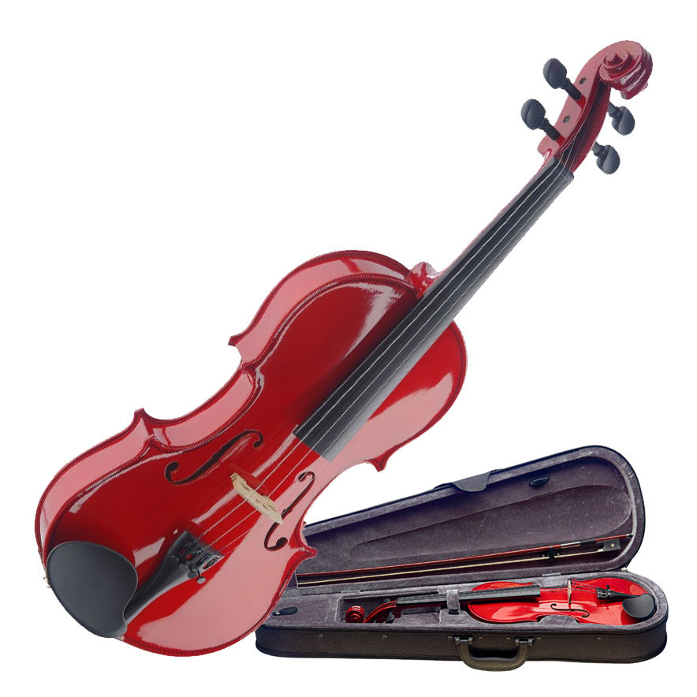

⇦ Назад
Ongaku Spring Violin

Идеальная скрипка для обучения. Порадуйте соседей прекрасной музыкой.
Ongaku Red Autumn

Скрипка для настоящих виртуозов смычки. Апплодисменты от слушателей в ваших руках
Ongaku Black Night
 Если стиль - Ваше второе я, поразите слушателей как идеальным звуком, так и красотой инструмента.
Если стиль - Ваше второе я, поразите слушателей как идеальным звуком, так и красотой инструмента.